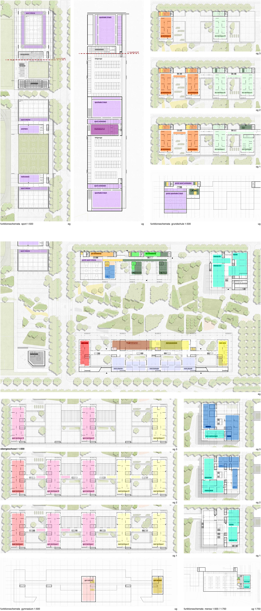
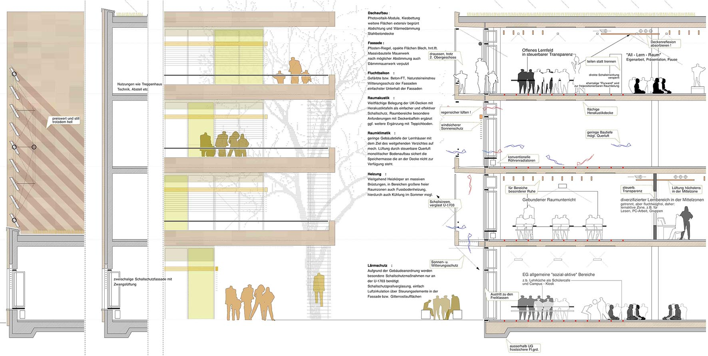
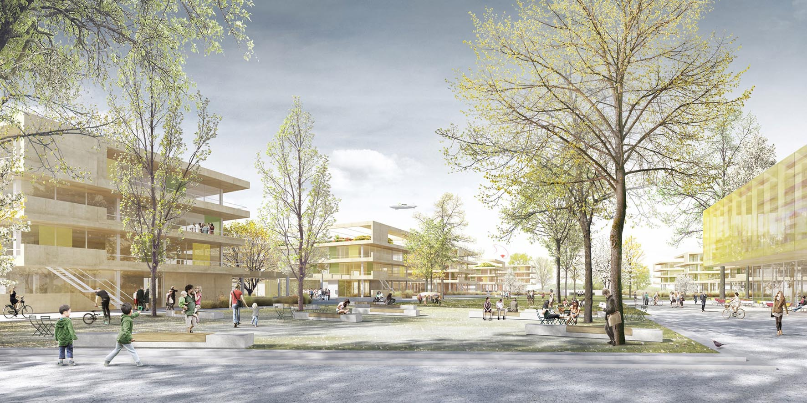

plano de situación

planta de acceso

esquemas de programa

alzados / secciones

alzados / secciones

sección constructiva

vista del campus
EL PUNTO DE PARTIDA
El proyecto, situado en Freiham, al oeste de Múnich, se trata de un campus escolar compuesto por un centro de enseñanza
primaria, un centro de enseñanza secundaria, un instituto, un centro de educación especial, una biblioteca y un comedor
con sus correspondientes instalaciones deportivas.
En el contexto urbano en el que se encuentra, se pretende por un lado asentarse continuando con la estructura rígida
de los edificios del entorno y por otro conectar dicha estructura de manera más fluida a través de las zonas verdes
que lo atraviesan.
EL CONCEPTO, EL ENTORNO URBANO Y LA IMAGEN DEL CAMPUS
En el planteamiento del concepto se siguen dos directrices a priori divergentes: por un lado el reconocimiento de cada
uno de los centros a nivel individual y por otro lado la escenificación del campus completo con personalidad propia
como importante germen social dentro del área urbana.
Esta dualidad se traslada también al propio proyecto: hacia el exterior el proyecto funciona como una unidad, compacta,
suma de sus distintas direcciones, mientras que hacia el interior los edificios se abren como un abanico en una división
múltiple correspondiente a cada uno de los centros, articulados entre sí por las zonas verdes del campus.
MATERIALIDAD
Los materiales apoyan dicho concepto: muro de fábrica hacia el exterior, como representación del campus como edificio público y forjados suspendidos con muro cortina como símbolo de transparencia y espíritu abierto hacia el interior, reforzando la idea del “colegio abierto”.
CONFIGURACIÓN DE LOS DISTINTOS CENTROS
El diseño de los “módulos de enseñanza”, elementos independientes que se apoyan sobre la planta baja continua (zócalo),
sigue dos propósitos: por un lado que los estudiantes puedan reconocerlo y decir “mira, esa es mi clase” (reforzando
la idea de identidad individual de la que antes se hablaba) y por otro lado la planta baja corrida tiene una función
social, que integra a la totalidad de la comunidad escolar.
La conexión de los diferentes módulos ofrece de este modo no solo sinergias económicas, sino que permite desarrollar
una identidad social común completa de los 4 centros en UN solo campus.
Las diferentes necesidades de los distintos grupos de edad, desde primaria hasta bachillerato, se suplen a través
de estrategias espaciales de tensión entre los espacios cerrados y los espacios continuos transparentes, o en su caso
abiertos.
ORGANIZACIÓN DE LA PLANTA
EL ÁREA DE CIENCIAS
A diferencia de los “módulos de enseñanza”, las aulas de ciencias mantienen, la mayoría de las veces, una estructura
separatista de corredores y aulas.
El proyecto propone la disolución de las áreas de enseñanza en un núcleo cerrado de instalaciones y espacios servidores
y una apertura del resto del espacio en zonas diáfanas de experimentales, agrupándose las diferentes clases en un
sólo espacio de ciencias abierto e interdisciplinar.
ESTRUCTURA DE LAS AULAS
Las aulas se desarrollan en superficie de acuerdo con la tipología exigida en el programa y al mismo tiempo se limitan las profundidades. De este modo se alcanzan los siguientes objetivos: se evitan los patios interiores y los problemas técnicos de seguridad contra incendios, todos los espacios están en contacto con luz y ventilación natural, se zonifican los espacios para agrupar por un lado a las edades comprendidas entre 12-15 y por otro entre 16-18, para evitar el uso exclusivo de un centro común.
SEGURIDAD CONTRA INCENDIOS
El concepto de balcones con escaleras de emergencia libera la planta de los requerimientos de seguridad contra incendios. Las zonas interiores tienen también salidas de emergencia a través de escaleras y balcones. La transparencia y apertura de los espacios garantizan que, en caso de incendio, la salida de emergencia sea reconocida con mayor rapidez.
INSTALACIONES DEPORTIVAS: CONCEPTO
Las instalaciones deportivas y los espacios adicionales se agruparán en un sencillo pero potente concepto: distintos elementos aunados bajo una cubierta suspendida que hace que se reconozca como una única unidad.
PARKING SUBTERRÁNEO
La organización de las instalaciones deportivas bajo una cubierta “suspendida” facilita una ventilación natural y completa y la extracción de humos de los aparcamientos subterráneos y de esta manera se evita el uso de ventilación mecánica de altos costes. Además, con ello se evitan también espacios cerrados que pueden provocar claustrofobia o pánico.
ZONAS VERDES
El principio dual se manifiesta en el parque del campus también de múltiples formas. Para hacerlo resistente al uso
intensivo e inevitable por parte de los estudiantes, el campus está definido por amplias zonas pavimentadas, dándole
más espacio a las zonas ajardinadas. La interconexión del campus con el centro urbano y con las instalaciones deportivas
fija una dirección fluida de este a oeste, pero al mismo tiempo toma en cuenta que los edificios están dirigidos norte-sur
y se articula con los centros escolares.
El escalonamiento de las zonas verdes, formando peldaños y bancos, permite conectar el campus con el paso subterráneo
a las instalaciones deportivas. Con una pendiente del 3,5% se logra superar de forma suave y prácticamente desapercibida
la diferencia de cota.
El espacio interior del campus se encuentra algo más bajo que el espacio que rodea la calle y con ello aumenta la
sensación de sumersión dentro de un parque protegido. Superficies y tiras de vegetación marcan el paso de la parte
exterior a la interior y forman al mismo tiempo un límite sutil e integrado entre el espacio público y las áreas de
los centros educativos y se extienden hasta las instalaciones deportivas, o en su caso, hasta el parque.
En la zona de las instalaciones deportivas se desarrollan, a partir de esta misma estrategia de escalonamiento, paredes
para escalar y gradas que sirven al mismo tiempo para patinar, como Skatepark, y como asientos para posibles espectadores
de las actividades deportivas.
Las terrazas y áreas ligeramente elevadas median entre el paso subterráneo y el parque.
SOSTENIBILIDAD
El planteamiento sostenible y ecológico, así como la construcción y la ejecución de los centros educativos no sólo
tienen importancia dentro del punto de vista constructivo, sino que precisamente un colegio ofrece la posibilidad
de poder tomar mayor conciencia del entorno y de la vida con z en un edificio sostenible. La sostenibilidad de un
proyecto se puede asegurar por medio de una elección minuciosa de los materiales, los cuales se pueden observar durante
todo su ciclo de vida: desde su producción (energía gris) pasando por sus propiedades en estado de construcción (climatización,
aislamiento térmico…) hasta su capacidad de reciclarse.
En cuanto a los materiales propuestos:
Hormigón armado: la extensa red de plantas de hormigón facilitan rutas cortas de transporte. El uso de materias
primas secundarias, como por ejemplo las gravas o las cenizas volátiles permiten disminuir la cantidad necesaria de
cemento y con ello la parte proporcional de la energía gris. De esta manera es posible, al final del ciclo de vida
del edificio, desmantelar el hormigón y reciclarlo.
Vidrio: debido a la aplicación consciente de elementos de edificación masivos, se alcanza una buena relación entre
los elementos abiertos y cerrados de fachada, con ello se reduce la necesidad de luz artificial e influye a el balance
de calor del edificio de manera positiva.
Los balcones y los elementos de protección solar garantizan la protección del calor en verano. Dichos balcones facilitan
también que las ventanas se puedan limpiar de forma sencilla y económica.
Fachadas: los balcones de hormigón prefabricado coloreados consiguen, como aleros de cubierta, una excelente protección
de la fachada. La planta baja, entendida como un zócalo, está constituida por muro de fábrica, robusto y resistente
al vandalismo.
Diseño interior: para el diseño interior se pone énfasis en la homogeneidad. Una cantidad reducida de materiales
escogidos cuidadosamente (linóleo, madera, elementos de protección acústica) garantizan una disminución de distintos
tipos de eliminación. En especial se presta atención a la separación sencilla de los materiales por medio de uniones
sujetas o atornilladas. Un requisito fundamental para un clima interior agradable es un espacio libre de sustancias
nocivas, así como la posibilidad posterior de reciclaje.
CONCEPTO ENERGÉTICO
Altos estándares de energía son parte ineludible, mientras tanto, de los avances tecnológicos, de modo que en el proceso
de planteamiento concreto de las estrategias conocidas casi se pueden implementar todos los estándares de energía.
Para ello se considera mejor y más contundente “ajustar” hacia abajo las exigencias de la reglamentación de ahorro
de energía, que pretender lograr los “puntos exactos” de la certificación PPHP de elevados costes.
Se obtienen de los parámetros: producción térmica sostenible (sistema de calefacción a distancia), distribución del
calor por la superficie, renuncia en gran parte, de ventilación mecánica o, en su caso, distribución del aire central
o descentralizado por medio de ventilación en pequeñas cantidades, numerosos modelos, para lograr también, sin tener
que utilizar un control de costes elevados, los objetivos definidos en el proyecto.
Elementos como por ejemplo ventilación natural por medio de ventanas en espacios con profundidades, la utilización
de elementos fotovoltaicos en los tejados y fachadas, reutilización de aguas residuales, etc, complementan el concepto.